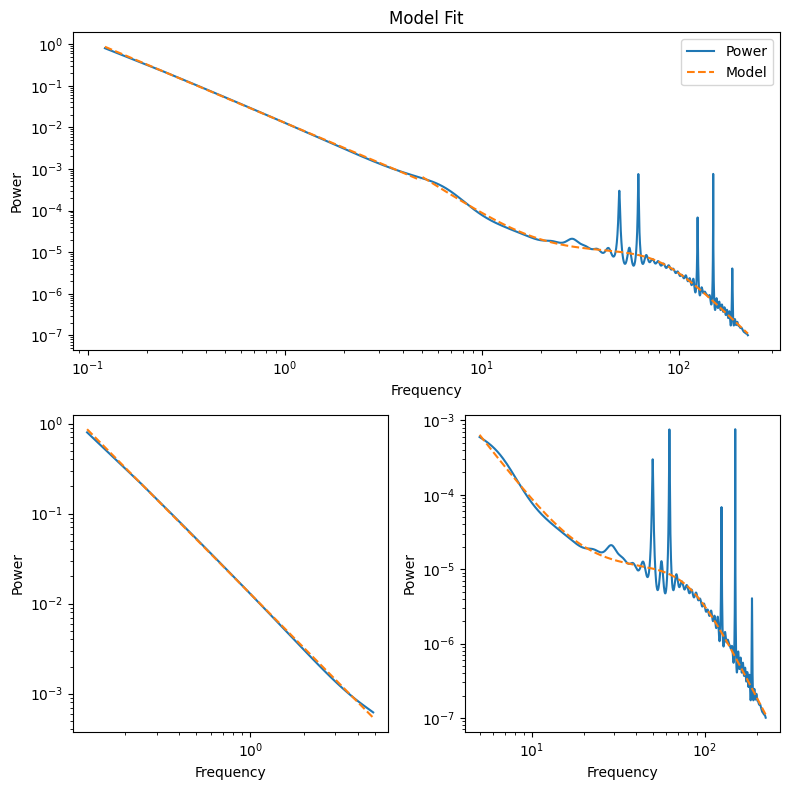

from tqdm.notebook import tqdm
import numpy as np
import pandas as pd
from scipy.optimize import curve_fit
import matplotlib.pyplot as plt
import matplotlib.gridspec as gridspec
import mne
from mne_bids import BIDSPath, read_raw_bids
from timescales.autoreg import compute_ar_spectrum
from neurodsp.spectral import compute_spectrum
import matplotlib.pyplot as plt
from timescales.fit import PSD
from neurodsp.utils.norm import normalize_sig
import warnings
warnings.filterwarnings("ignore")
EEG Features#
This analysis uses “A Dataset of Scalp EEG Recordings of Alzheimer’s Disease, Frontotemporal Dementia and Healthy Subjects from Routine EEG” from Miltiadous et al., 2023 and available from openneuro. The goal of the analysis is to extract interpretable features from power spectral density and then train a sparse logistic regression risk model to predict Alzhiemer’s patients from helthy controls.
# Fit linear function to low frequencies
def linear(xs, slope, offset):
return offset - np.log10(xs**slope)
def compute_features(sig):
"""Computes spectral features."""
# Compute power spectrum
fs = 500
freqs, powers = compute_ar_spectrum(normalize_sig(sig, 0, 1), fs, order=100, f_range=(.001, 225))
# Fit linear model to low frequencies
f_range = (0, 5)
low_inds = np.where((freqs > f_range[0]) & (freqs <= f_range[1]))[0]
params, _ = curve_fit(linear, freqs[low_inds], np.log10(powers[low_inds]), bounds=((-10, -100), (10, 100)),
loss="huber", f_scale=.25, sigma=np.logspace(-3, 0, len(low_inds)))
slope = params[0]
offset = params[1]
linear_rsq = np.corrcoef(linear(freqs[low_inds], slope, offset), np.log10(powers[low_inds]))[0][1]**2
# Fit Lorentzian to high frequencies
hi_inds = np.where(freqs > f_range[1])[0]
psd = PSD()
psd.fit(freqs[hi_inds], powers[hi_inds], f_range=(f_range[1], 225), f_scale=.1, ap_mode="double")
params = np.insert(psd.params, [0, 0], [slope, offset])
param_names = []
param_names += ["linear_slope", "linear_offset"]
param_names += ["alpha_"+i for i in psd.param_names]
param_names += ["gamma_"+i for i in psd.param_names]
lorentzian_rsq = psd.rsq
X = (freqs, powers)
inds = (low_inds, hi_inds)
params = (params, param_names)
rsq = (linear_rsq, lorentzian_rsq)
return X, inds, params, psd, rsq
Features#
Below, spectral features are computed across all eeg electrodes for an example subject. After verying that the features are resonable, this process will be applied to all subjects.
# Load example subject
bids_path = BIDSPath(subject="001", task="eyesclosed", datatype="eeg",
extension=".set", root="./ds004504-download", check=False)
bids = read_raw_bids(bids_path=bids_path, verbose=False)
X = bids.get_data()
# Compute fatures
X, inds, params, psd, rsq = compute_features(X[0])
# Unpack results
freqs, powers = X
low_inds, hi_inds = inds
params, param_names = params
linear_rsq, lorentzian_rsq = rsq
# Plot example subject
slope = params[0]
offset = params[1]
fig = plt.figure(tight_layout=True, figsize=(8, 8))
gs = gridspec.GridSpec(10, 2)
ax = fig.add_subplot(gs[:5, :])
ax.loglog(freqs, powers, label="Power")
ax.loglog(freqs[low_inds], 10**linear(freqs[low_inds], slope, offset), color="C1", ls="--")
ax.loglog(freqs[hi_inds], psd.powers_fit, color="C1", ls="--", label="Model")
ax.set_ylabel('Power')
ax.set_xlabel('Frequency')
ax.set_title("Model Fit")
ax.legend()
ax = fig.add_subplot(gs[5:, 0])
ax.loglog(freqs[low_inds], powers[low_inds])
ax.loglog(freqs[low_inds], 10**linear(freqs[low_inds], slope, offset), ls="--")
ax.set_ylabel('Power')
ax.set_xlabel('Frequency')
ax = fig.add_subplot(gs[5:, 1])
ax.loglog(freqs[hi_inds], powers[hi_inds])
ax.loglog(freqs[hi_inds], psd.powers_fit, color="C1", ls="--")
ax.set_ylabel('Power')
ax.set_xlabel('Frequency');

A note on failed fits:#
These account for 2.3% of all spectra (38 out of 1672). Ignoring these fits for now (via imputation of parameters).
results = []
for i in tqdm(list(range(1, 89)), total=88):
# Load data for ith subject
bids_path = BIDSPath(subject=str(i).zfill(3), task="eyesclosed", datatype="eeg",
extension=".set", root="./ds004504-download", check=False)
bids = read_raw_bids(bids_path=bids_path, verbose=False)
X = bids.get_data()
# Compute features
_results = []
for ix, x in enumerate(X):
try:
_results.append(compute_features(x))
except:
print("Failed fit for sub_" + str(i).zfill(3) + ", psd_" + str(ix))
_results.append([None])
results.append(_results)
Failed fit for sub_006, psd_4
Failed fit for sub_013, psd_9
Failed fit for sub_014, psd_12
Failed fit for sub_014, psd_17
Failed fit for sub_017, psd_0
Failed fit for sub_017, psd_17
Failed fit for sub_018, psd_7
Failed fit for sub_019, psd_1
Failed fit for sub_019, psd_5
Failed fit for sub_020, psd_17
Failed fit for sub_034, psd_0
Failed fit for sub_034, psd_4
Failed fit for sub_035, psd_9
Failed fit for sub_038, psd_9
Failed fit for sub_039, psd_3
Failed fit for sub_040, psd_2
Failed fit for sub_040, psd_3
Failed fit for sub_040, psd_11
Failed fit for sub_044, psd_4
Failed fit for sub_050, psd_15
Failed fit for sub_051, psd_8
Failed fit for sub_053, psd_17
Failed fit for sub_055, psd_10
Failed fit for sub_057, psd_8
Failed fit for sub_059, psd_7
Failed fit for sub_063, psd_3
Failed fit for sub_063, psd_12
Failed fit for sub_067, psd_2
Failed fit for sub_075, psd_0
Failed fit for sub_075, psd_2
Failed fit for sub_075, psd_11
Failed fit for sub_075, psd_17
Failed fit for sub_077, psd_1
Failed fit for sub_078, psd_15
Failed fit for sub_082, psd_3
Failed fit for sub_084, psd_7
Failed fit for sub_084, psd_12
Failed fit for sub_087, psd_6
# Get param names
param_names = results[0][0][2][1]
param_names
# Get column names
columns = []
for ch in bids.ch_names:
for pn in param_names:
columns.append(pn + "_" + ch)
# Extract features out of results
n_features_ch = 10
n_subjects = len(results)
n_channels = len(bids.ch_names)
n_features = int(n_features_ch * n_channels)
X = np.zeros((n_subjects, n_features))
for ir, res in enumerate(results):
_X = np.zeros((n_channels, n_features_ch))
for ic in range(n_channels):
if res[ic][0] is None:
_X[ic] = np.nan
else:
_X[ic] = res[ic][2][0]
X[ir] = _X.flatten()
df = pd.DataFrame(X, columns=columns)
df
| linear_slope_Fp1 | linear_offset_Fp1 | alpha_offset_Fp1 | alpha_knee_freq_Fp1 | alpha_exp_Fp1 | alpha_const_Fp1 | gamma_offset_Fp1 | gamma_knee_freq_Fp1 | gamma_exp_Fp1 | gamma_const_Fp1 | ... | linear_slope_Pz | linear_offset_Pz | alpha_offset_Pz | alpha_knee_freq_Pz | alpha_exp_Pz | alpha_const_Pz | gamma_offset_Pz | gamma_knee_freq_Pz | gamma_exp_Pz | gamma_const_Pz | |
|---|---|---|---|---|---|---|---|---|---|---|---|---|---|---|---|---|---|---|---|---|---|
| 0 | 1.999995 | -1.890114 | -1.099668 | 0.001000 | 3.005575 | 3.980799e-32 | 3.850822 | 82.756791 | 4.604163 | 4.330143e-32 | ... | 1.842192 | -1.404817 | -1.115784 | 5.547366 | 2.333155 | 2.417118e-21 | -2.911575 | 42.522054 | 9.941192 | 2.665964e-21 |
| 1 | 1.786204 | -1.541741 | -1.082164 | 4.846717 | 2.475302 | 3.454962e-38 | 5.701665 | 121.665441 | 5.116984 | 4.753117e-38 | ... | 1.767503 | -1.428918 | -0.402682 | 6.597943 | 2.859961 | 2.550457e-08 | 11.611196 | 131.626044 | 7.942361 | 2.550448e-08 |
| 2 | 1.843766 | -1.668789 | -1.347182 | 0.829925 | 2.204842 | 1.386345e-10 | -15.026474 | 4.061355 | 8.910101 | 1.386346e-10 | ... | 1.906065 | -1.809610 | -1.748475 | 13.369298 | 5.093451 | 9.535672e-10 | 0.012650 | 18.991920 | 3.147168 | 9.444851e-12 |
| 3 | 1.931557 | -1.473659 | 0.068138 | 5.305579 | 4.472861 | 1.026815e-08 | 4.485035 | 83.984854 | 4.602234 | 1.026815e-08 | ... | 1.808475 | -1.373736 | -0.491912 | 6.015941 | 3.079842 | 1.146244e-09 | 2.243575 | 76.162451 | 3.674683 | 1.146244e-09 |
| 4 | 2.086636 | -1.919736 | -2.444472 | 0.001000 | 1.912044 | 5.142761e-27 | 4.702490 | 107.757547 | 4.838998 | 3.526649e-27 | ... | 1.892321 | -1.880928 | -2.266000 | 0.192714 | 1.719661 | 2.236862e-13 | -9.444386 | 0.778986 | 9.903491 | 2.456826e-13 |
| ... | ... | ... | ... | ... | ... | ... | ... | ... | ... | ... | ... | ... | ... | ... | ... | ... | ... | ... | ... | ... | ... |
| 83 | 1.948417 | -1.781985 | -1.509231 | 0.001000 | 2.407650 | 3.582785e-31 | 5.863354 | 110.937914 | 5.159232 | 3.370263e-31 | ... | 1.948080 | -2.003739 | -2.440192 | 0.001516 | 1.594026 | 2.004979e-17 | -9.579449 | 35.915639 | 9.814020 | 2.129512e-17 |
| 84 | 1.956762 | -2.497198 | 0.638800 | 7.284720 | 5.572401 | 2.164695e-12 | 3.791495 | 78.747368 | 4.767501 | 1.131343e-08 | ... | 1.681513 | -1.334161 | 1.715154 | 8.640709 | 5.173561 | 2.847992e-16 | 2.921847 | 66.194212 | 4.065016 | 2.849795e-16 |
| 85 | 2.626712 | -2.333719 | 4.132930 | 93.032762 | 4.619141 | 1.899519e-23 | -3.062196 | 170.389884 | 4.478984 | 1.935138e-23 | ... | 2.491471 | -2.286559 | -2.241434 | 4.484055 | 2.673195 | 4.335990e-09 | 3.320810 | 66.793276 | 4.700887 | 4.441296e-13 |
| 86 | 1.700144 | -1.239457 | -1.144085 | 0.001053 | 2.442362 | 1.036301e-21 | -13.598869 | 23.156531 | 9.990627 | 1.035967e-21 | ... | 1.851146 | -1.434754 | -0.506300 | 4.912096 | 2.834201 | 3.684070e-09 | -3.457820 | 22.521734 | 8.820878 | 3.684070e-09 |
| 87 | 1.887171 | -1.457352 | -0.643048 | 5.939904 | 2.672771 | 5.897936e-36 | 5.608481 | 91.916341 | 5.370338 | 8.300579e-36 | ... | 1.859451 | -1.433320 | -0.222701 | 7.788490 | 2.977065 | 1.365241e-11 | 8.475316 | 116.344327 | 6.956280 | 2.049743e-08 |
88 rows × 190 columns
df.to_csv("alzheimers_features.csv")